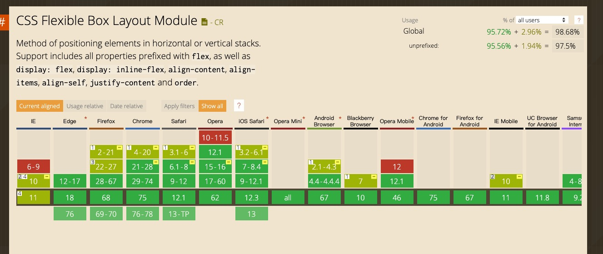

Flex 布局
什么是 Flex 布局？
Flex 是 Flexible box 的缩写，顾名思义为“ 弹性布局 ”， 可以为盒模型提供比较大的灵活性。
兼容性
在 canIuse 上，flex 的兼容性如下 
可以看到，出了老版的 ie 支持不够好以外，现在浏览器的支持都还可以，尤其移动端可以使用。
用法
任何一个容器都可以指定为 Flex 布局
.box{
display: flex;
}
基本概念
采用 Flex 布局的元素，称为 Flex 容器（flex container），简称“容器”。它的所有子元素自动成为容器成员，成为 flex 项目（flex item），简称“项目”。

容器默认存在两根轴：水平的主轴（main axis）和垂直的交叉轴（cross axis）。主轴的开始位置（与边框 的交叉点）叫做 main start，结束位置叫做 main end；交叉轴的开始位置叫做 cross start，结束位置叫做 cross end。
项目默认沿主轴排列。单个项目占据的主轴空间叫做 main size，占据的交叉轴空间叫做 cross size。
容器属性
flex 容器主要有以下 6 个属性设置
- flex-direction
- flex-wrap
- flex-flow
- justify-content
- align-items
- align-content
详细说明
- flex-direction
flex-direction 属性决定主轴的方向，他有 4 个属性值
row（默认值）：主轴为水平方向，起点在左端 row-reverse:主轴为水平方向，起点在右端 column:主轴为垂直方向，起点在上沿 column-reverse:主轴为垂直方向，起点在下沿
- flex-wrap
默认情况下，项目都排在一条线（又称“轴线”）上。flex-wrap 属性定义，如果一条轴线 排不下，如何换行
nowrap（默认）：不换行 wrap:换行，第一行在上方 wrap-reverse:换行，在第一行的下方
- flex-flow
flex-flow 属性是 flex-direction 属性和 flex-wrap 属性的简写形式，默认 row nowrap。
- justify-content
justify-content 属性定义了项目在主轴上的对齐方式
flex-start（默认值）：左对齐 flex-end：右对齐 center：居中 space-between:两端对齐，项目之间的间隔都相等 space-around：每个项目两侧的间隔相等。所以，项目之间的间隔比项目与边框的间隔大一倍。
- align-items
align-items 属性定义项目在交叉轴上如何对齐。
flex-start：交叉轴的起点对齐 flex-end:交叉轴的终点对齐 center：交叉轴的中点对齐 baseline：项目的第一行文字的基线对齐。 stretch（默认值）：如果项目未设置高度或设为 auto，将占满整个容器的高度。
- align-content
align-content 属性定义了多根轴线的对齐方式。如果项目只有一根轴线，该属性不起作用。
flex-start：与交叉轴的起点对齐。 flex-end：与交叉轴的终点对齐。 center：与交叉轴的中点对齐。 space-between：与交叉轴两端对齐，轴线之间的间隔平均分布。 space-around：每根轴线两侧的间隔都相等。所以，轴线之间的间隔比轴线与边框的间隔大一倍。 stretch（默认值）：轴线占满整个交叉轴。
项目的属性
项目的属性主要包括 6 个
- order
- flex-grow
- flex-shrink
- flex-basis
- flex
- align-self
项目属性的用法
- order
order 属性定义项目的排列顺序。数值越小，排列越靠前，默认为 0.
- flex-grow
flex-grow 属性定义项目的放大比例，默认值为 0，即如果存在剩余空间，也不放大。
- flex-shrink
flex-shrink 属性定义了项目的缩小比例，默认为 1，即如果空间不足，改项目将缩小。
- flex-basis
flex-basis 属性定义了在分配多余空间之前，项目占据的主轴空间（main size）。 浏览器根据这个属性，计算主轴是否有多余空间。它的默认值为 auto，即项目的本来大小。它可以设为跟 width 或 height 属性一样的值（比如 350px），则项目将占据固定空间。
- flex
flex 属性是 flex-grow，flex-shrink 和 flex-basis 的简写，默认值为 0 1 auto。后面两个属性可选 改属性有两个快捷值：auto（1 1 auto）和 none（0 0 auto）. 建议优先使用这个属性，而不是单独写三个分离的属性，因为浏览器会推算相关值
- align-self
align-self: auto | flex-start | flex-end | center | baseline | stretch; 属性和 align-items 属性一致
参考
🐸🐸🐸🐸🐸🐸🐸🐸🐸🐸🐸🐸🐸🐸🐸🐸🐸🐸🐸🐸🐸🐸🐸🐸🐸🐸
练习: 小青蛙游戏–练习使用
🐸🐸🐸🐸🐸🐸🐸🐸🐸🐸🐸🐸🐸🐸🐸🐸🐸🐸🐸🐸🐸🐸🐸🐸🐸🐸